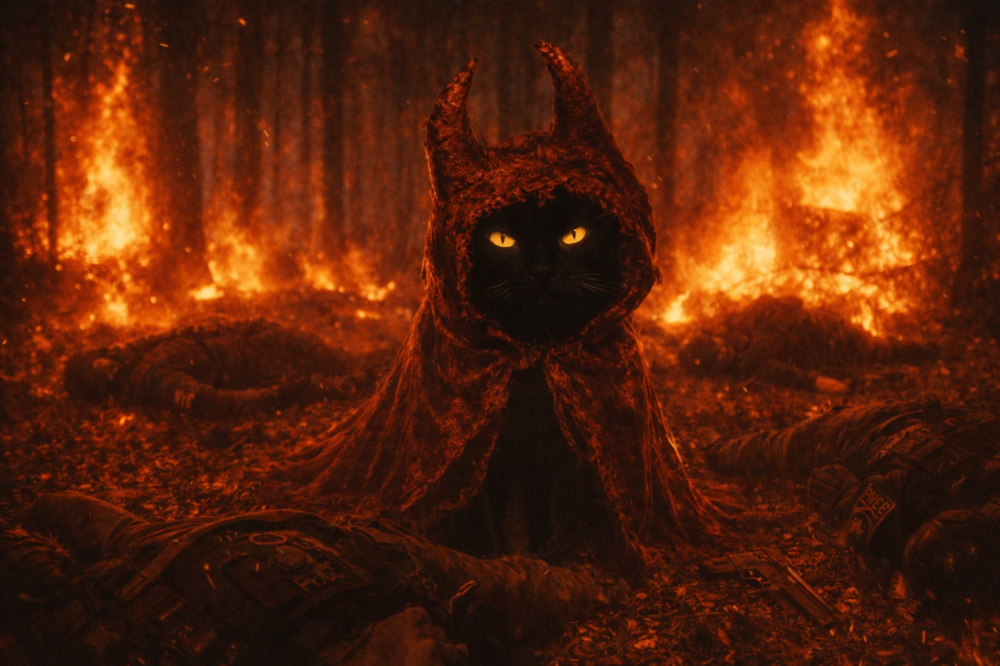

DOSSIÊ M.I.A.U — REGISTRO #0042
Gato Diabo
Também conhecido como: Gato Infernal, Gato do Submundo, Gato de Lúcifer, Felino das Chamas, O Mensageiro
⛔ Nível de Ameaça: Imensurável ⛔

Registro visual capturado por drone da Equipe Delta — Arquivo M.I.A.U — Uso Interno
- Olhos que emitem um brilho vermelho constante, visível mesmo em plena luz do dia
- Pelagem negra com marcas que parecem brasas vivas sob a pele
- Temperatura corporal extremamente elevada, capaz de derreter objetos ao toque
- Chifres pequenos e curvados próximos às orelhas
- Cauda bifurcada na ponta
- Pressão enorme ao seu redor
- Possui uma capa vermelha que o cobre quase inteiramente
- Controle total sobre o fogo e altas temperaturas
- Capacidade de criar portais para onde quiser
- Aparente imunidade completa a danos físicos convencionais
- Possessão temporária de outros seres vivos
- Pseudomanipulação mental
- Capacidade de modificar a própria aparência
- Invocação de gatos do submundo
- Capacidade de falar todas as línguas humanas e felinas
- Água benta causa desconforto
- Símbolos sagrados o repelem por um curto período de tempo
- Rituais de exorcismo avançado funcionam
- Prata consagrada causa dano a ele
- Rituais sagrados de elite são eficazes para o parar
⚠ ALERTA DE CONTENÇÃO ⚠
Sob nenhuma circunstância tente contê-lo sozinho. Equipes inteiras foram dizimadas em tentativas anteriores. Se você o encontrar, apenas reze. Sua única esperança é que ele perca o interesse antes de decidir acabar com você.
Agente Mirella é uma das poucas sobreviventes de um encontro direto com o Gato Diabo. Ela ficou afastada por 8 meses após o incidente e ainda sofre com as sequelas.
— Agente Mirella, Depoimento #0042-A
O Gato Diabo parece ser único, mas há rumores de que ele pode criar crias demoníacas menores. Investigações ainda estão em andamento sobre possíveis variantes.
A história do Gato Diabo ainda está sendo documentada.